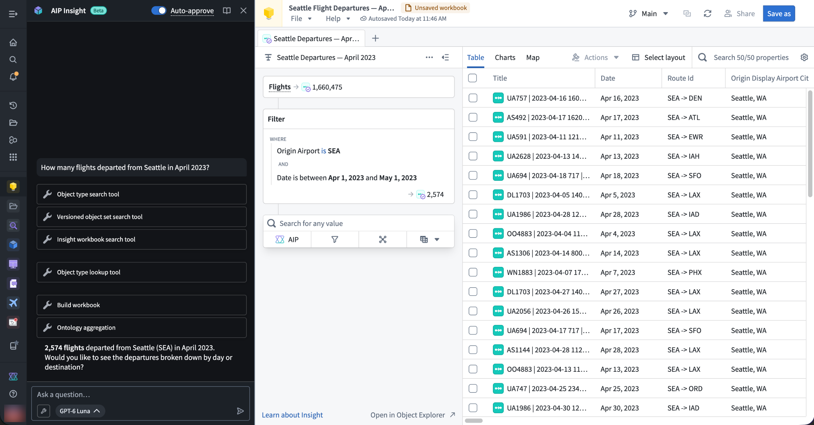

1. 导读与学习目标
同事口头说的「Palantir 的 aip insight」，在官方材料里对应的是 AIP Insight（单数）。读完本课，应能分清三件事：
- 宿主应用 Insight：点选式、面向本体数据的分析应用，产物是 workbook（工作簿）。
- AIP Insight：做进 Insight 里的应用内助手（in-app copilot），用自然语言起步并生成可检查的工作簿。
- 不要对错号的相邻产品：例如独立的 AIP Analyst、用来建可部署助手的 AIP Chatbot Studio、以及「不访问你的数据」的 AIP Assist。
本课把官方陈述与分析分开写。官方陈述只依据已打开的 Palantir 文档或发布说明原意；相邻产品对照先列各产品自己的官方定义，归纳边界时标明为分析，不把它写成官方对比结论。第 6 节操作例子是教学示例，不表示已在真实环境跑通。
2. 先辨名
名字接近的东西不止一个，对错号会把能力范围说错。
表 1 辨名：AIP Insight、Insight，以及容易认错的名字
| 名称 | 它是什么 | 性质 |
|---|---|---|
| AIP Insight | 内置于 Insight 的应用内助手：用自然语言把对本体的提问做成可检查、可修改、可保存的工作簿 | 官方陈述（2026-11-19 发布说明） |
| Insight | 点选式本体分析应用：用分析路径过滤对象、沿链接跳转、做聚合和可视化，并把结果保存在 workbook 里 | 官方陈述（Insight 总览；2026-03-27 GA） |
| AIP Insights（复数） | 检索当日在 2026 年官方发布说明全文中未出现 | 分析（未找到官方用法） |
| AIP Analyst | 独立的智能体式分析界面，用自然语言在本体上做即席分析 | 官方陈述 |
| AIP Chatbot Studio（曾用名 AIP Agent Studio） | 用来创建可部署的 AIP Chatbots（曾用名 AIP Agents）的构建器 | 官方陈述 |
| AIP Assist | 帮助用户在平台里导航、提问的支持工具；官方写明它「does not access your data」 | 官方陈述 |
| 「insights」营销用语 / Ontology and AIP observability | 解决方案页里的 insight 字样，或观测性功能 | 分析（排除认错，不当作 AIP Insight 规格） |
Insight FAQ 在检索当日仍写：Insight「将很快」能与平台上的 AIP Chatbots（原 AIP Agents）集成。这句话说的是与 Chatbots 的集成「即将」到来，全文没有出现 AIP Insight。［官方陈述］来源：Insight FAQ。
［分析］FAQ 与 2026-11-19 发布说明不同步。不能把「即将集成 Chatbots」自动理解成 AIP Insight 已经是、或即将是 Chatbot / Agent 集成。
3. 官方定位
发布说明条目：日期 November 19, 2026；类型 FEATURE；类别 Analytics；应用 Insight；标题 Build Insight workbooks with AIP。［官方陈述］来源：2026 年发布说明。
短描述原文要点：用 AIP Insight（your in-app copilot）把关于本体的问题变成工作簿；描述想探索的内容，AIP 帮助找到相关数据并构建可检查、可 refining、可保存的工作簿。入口有两处：Insight 首页的 Start an analysis with AIP，以及工作簿分析路径功能区里的 AIP。
长文进一步写明：
- AIP Insight 是直接做进 Insight 的助手。
- 它把「关于你的 Ontology 的问题」变成工作簿。
- AIP 生成的分析步骤在工作簿里可见、可编辑，以便检查结果如何产生并自行修改步骤。
- 上述两处入口只对有 AIP 访问权限的用户显示。
- 可以继续对话深入探索，也可以用 Insight 既有工具自行 refining；保存后问题演化时还能再打开。
- AIP Insight is available on all enrollments with AIP enabled.
- AIP Insight is currently in the beta phase of development.

宿主应用 Insight 的定义［官方陈述］：
Insight is a point-and-click application for exploring and analyzing Ontology data. Build step-by-step analysis paths to filter objects, traverse object links, aggregate results, and create visualizations.
2026-03-27 的 GA 公告补充：Insight 面向需要探索本体数据、下钻对象类型之间关系、并在结果上采取行动、但不需要深厚技术背景的 operational users 和 analysts。［官方陈述］
［分析］AIP Insight 是「在已经存在的 Insight 分析体验里，用自然语言起步并继续对话」，而不是替换 Insight，也不是另做一个智能体工作室。产物仍然是 Insight workbook；检查与修改走的是分析路径，而不是不可见的黑盒答案。
4. 能力与已公布限制
先把 copilot 能自动做的 和 宿主 Insight 已有、但不能算进 copilot 自动化 分开。把后者说成「AIP Insight 已经能自动做」，是本课明确反对的做法。
4.1 官方写明的 copilot 能力
表 2 AIP Insight copilot 能力（均据 2026-11-19 发布说明）
| 能力 | 官方原意（摘要） |
|---|---|
| 自然语言提问 | Describe what you want to explore in natural language |
| 查找相关数据 | AIP helps you find relevant data |
| 生成工作簿 | build a workbook to answer your question |
| 步骤可见可编辑 | analysis steps AIP creates are visible and editable |
| 可检查结果如何产生 | inspect how the results were produced and modify the steps yourself |
| 创建与编辑分析路径 | It can create and edit analysis paths |
| 继续对话 | Continue the conversation to explore further |
| 改用既有工具 refining | or refine the workbook yourself using Insight’s existing tools |
| 保存后再打开 | Save your workbook to return to it as your questions evolve |
4.2 官方写明的 copilot 限制（不可删）
- 目前处于 beta 开发阶段。
- 可以创建和编辑分析路径。
- 表格、图表、地图布局必须手工配置（table, chart, and map layouts must be configured manually）。
- 部分 Insight 功能尚不被 copilot 支持；官方点名包括 interfaces（接口）与 derived properties（派生属性）。
［分析］这不是「Insight 没有 interfaces 或 derived properties」。Insight 本身已在 2026-10-14 发布说明中支持用 Ontology interfaces 做跨对象类型分析，表格文档也说明可添加 derived property。限制针对的是 AIP Insight 这个 copilot 还不会帮你做这些事；宿主能力与 copilot 能力在检索当日并不对齐。
发布说明没有写：默认模型、是否多步自主规划、是否自动写 SQL、是否自动执行 writeback（写回）、上下文窗口、多语言提问、准确率，或一次提问触发多少次模型调用。这些应视为未知，不要默认与 AIP Analyst 相同。
4.3 宿主 Insight 已有、但不能自动算作 copilot 能力
表 3 宿主 Insight 能力摘录（用户 refining 时可能用到；来源见各行）
| 宿主能力 | 要点 |
|---|---|
| 分析路径与工具丝带 | 逐步堆 Filter、Link、Transform 卡片；可选中某步查看结果；卡片不能重排，但可在步骤间插入 |
| Filter / Link / Transform | 过滤对象；沿对象类型链接 pivot；集合运算、Group by、SQL sandbox 等 |
| SQL sandbox | 仅当路径里只有一种对象类型时可用；可与其他对象类型 join 且不必依赖 link types；结果是物化预览，不会写回路径，也不是本体化结果 |
| 表格 / 图表 / 地图 | 展示对象、做分布与指标、按地理属性筛选；筛选会进入分析路径 |
| 写回（Action） | 可在分析结果上创建、更新、删除对象；需对象类型编辑权限、数据源写权限等 |
| 保存、分享、发布 object set | 可不保存即席分析；保存后可分享；路径可发布为平台级 object set |
| Global Branching | 可切到某 branch 看该分支本体并跑 action；在 branch 上不能保存工作簿或布局、不能发布 object set、不能导出 Excel |
5. 工作流：从提问到可保存的工作簿
实线步骤是发布说明已写明的交互；「手工配置布局 / 用既有工具 refining」是宿主能力，不是发布说明对 copilot 自动排版的承诺。
6. 教学示例（明确为示例，非实测）
下面的场景和提问都是教学示例，用来把第 5 节官方步骤串成一句可说清的话。对象类型名称借用 Insight GA 公告与官方 SQL 截图里出现过的示例域（Aircraft、Flights、Airports，以及 City = El Paso），不代表本课已在任何环境执行过这些提问。
示例设定： enrollment 已启用 AIP，本人有 AIP 访问权限；Ontology 中已有上述对象类型及链接。
- 打开 Insight 首页，选择 Start an analysis with AIP。［官方入口］
- 用自然语言输入类似：「找出近期经停 El Paso 机场的飞机，并按机型汇总。」（示例提问，非官方提示模板）
- 按官方描述，AIP 应帮助查找相关数据，并生成带分析路径的工作簿；路径步骤可见、可编辑。应打开各步卡片，核对过滤条件、链接跳转和对象数量，而不是只读最终数字。
- 若还想看趋势或地图：按官方限制，表格、图表、地图布局需自己在 Charts / Maps 等页签里配置，不要期待 copilot 已经排好版。
- 若提问依赖 interfaces 跨多种对象类型聚合，或要用 derived properties：按发布说明，当前 copilot 还做不了；应改用 Insight 既有工具手工做，或换提问。
- 可继续对话收窄范围，或直接在路径里改 Filter / Link / Transform。满意后保存工作簿。
示例故意不承诺的事情： 不保证一定选对对象类型；不保证自动写出可用 SQL；不保证自动执行写回 Action；也不给出准确率。这些都没有官方规格。
7. 对本体的依赖
- AIP Insight 长文第一句就是 “Turn questions about your Ontology into workbooks…”。［官方陈述］
- Insight 总览把「Your data is modeled in the Ontology」列为推荐使用条件之首。
- 官方分析工具对照页写：Insight 面向 operational users 分析本体并创建 object set；它利用 object types、interfaces、link types 和 actions。
- 对照页同时把 Contour 留给「部分或全部数据尚未映射进 Ontology」或需要在很大表数据上分析的情况。
［分析］AIP Insight 官方设想的输入是已经进 Ontology 的对象数据，而不是任意数据集或未建模的原始表。发布说明没有写它能否像 AIP Analyst 那样把 dataset、Notepad、Workshop 模块、函数直接加进上下文；在没有官方句子之前，不应假定可以。
宿主细节与 copilot 限制对得上的两处：Insight 已支持 interfaces，但 AIP Insight copilot 尚不支持；SQL sandbox 的 join 结果不是本体化数据，也不能直接改变路径。
8. 和相邻产品的边界
检索当日 Palantir 没有「AIP Insight 与某某」专页。下表先用各产品自己的官方定义；表后归纳标为分析。
表 4 相邻产品边界（官方定义摘要）
| 产品 | 官方怎么定位 | 是否独立应用 / 构建器 | 主要产物或用法 |
|---|---|---|---|
| AIP Insight | 内置于 Insight 的 in-app copilot | 否，挂在 Insight 里 | 可检查、可 refining、可保存的 Insight workbook；可创建和编辑 analysis paths |
| Insight | 点选式探索与分析本体数据 | 是，Analytics 应用 | workbook、可发布的 object set、可在结果上写回 |
| AIP Analyst | 智能体式工作流，自然语言在本体上做即席分析 | 是；可嵌入 Workshop 或 iframe | 可保存为 Compass 中的 analysis 资源 |
| AIP Chatbot Studio | 创建可部署的 AIP Chatbots（原 Agents） | 是，构建器 | 可部署 chatbot；也可放进 Workshop |
| AIP Assist | 平台导航与帮助 | 平台侧栏 | 基于文档与上下文的帮助；官方写明不访问你的数据 |
| Quiver 中的 AIP | 在 Quiver 里用自然语言生成并配置卡片 | Quiver 内功能，不是 Insight copilot | Quiver 分析卡片与图；时间序列等 |
| AIP Logic | 无代码创建由本体数据支撑的 AI 函数 | 是，构建器 | AI 函数、自动化 |
| Contour | 面向表数据、大规模点选分析 | 是 | Contour 分析；数据未进本体时更常走这里 |
官方已经直接做过对照的两组［官方陈述］：
- Insight vs Object Explorer： Object Explorer 是本体主页与搜索发现处；Insight 更适合已经对要分析的数据有所了解、需要直观分析工作流的人。
- Insight vs Contour vs Quiver： 点选分析三件套——Insight 面向 operational users 分析本体并创建 object set；Quiver 支持更高级本体分析与仪表盘；Contour 面向表数据与大规模分析。
［分析，非官方对比页］可以这样记，但不要说成 Palantir 官方结论：
- 要在 Insight 里用自然语言起步、得到能打开、能改步骤、能保存的工作簿 → AIP Insight。
- 要独立智能体分析会话、可嵌入 Workshop、并可把 dataset / 函数等作为上下文 → 公开文档写得更完整的是 AIP Analyst；发布说明没有说 AIP Insight 具备这些。
- 要可在应用里反复使用、甚至经 SDK / API 对外提供的助手 → Chatbot Studio。
- 只想问平台怎么用、且不能碰业务数据 → AIP Assist；不能把 Assist「不访问你的数据」套到会查找本体数据的 AIP Insight 上。
- 要在 Quiver 卡片画布 / 时间序列 / 仪表盘里用自然语言 → Quiver 的 AIP 功能。
《AIP features》参考表与《Enable AIP features》举例清单，检索当日都没有点名 AIP Insight（也未列入 AIP Analyst）。［官方陈述］缺席说明文档尚未更新，不能反向推导「官方认为它们不是 AIP 功能」。权限仍以发布说明的「enrollment 已启用 AIP + 用户具有 AIP access」为准。
9. 适用与不适用
官方建议使用 Insight 宿主的情况［官方陈述］：数据已建模进本体；需要不用写代码的可视化下钻；想探索对象关系（Link）；想从分析结果写回本体；角色是 analyst / investigator；已经对要分析的数据有所了解（否则更建议先用 Object Explorer）。
官方描述的 AIP Insight 增量［官方陈述］：希望用自然语言描述探索意图；希望分析步骤可见可编辑，而不是只拿到一句结论；希望随后继续对话或改用既有工具 refining，并保存工作簿。
官方已划出的不适用 / 尚未支持［官方陈述］：
- 数据还没进本体 → 官方更指向 Contour 等表分析工具。
- 需要 copilot 自动排好表格、图表、地图布局 → 官方要求手工配置。
- 提问依赖 interfaces 或 derived properties → copilot 尚不支持。
- 需要生产级、可对外部署的助手或应用 → Chatbot Studio、Workshop、OSDK / API。
- 只想问平台文档且不能访问业务数据 → AIP Assist。
- 主要做时间序列、Quiver 仪表盘并嵌入 Workshop → Quiver。
- 把 beta 当成与 GA 相同的长期承诺 → 官方 beta 定义写明不保证一定进入后续阶段。
- 人在 Global Branch 上又必须保存工作簿 / 发布 object set / 导出 Excel → 宿主禁用这些操作。
10. 权限、可用性与定价：已知和未知
10.1 可用性（已知）
- 对所有已启用 AIP 的 enrollment 可用；两个入口只对有 AIP access 的用户显示；目前处于 beta。［官方陈述］
- 官方 beta 定义要点：向更广泛客户提供前可能缓慢放量；文档会标注 beta；不保证一定进入后续阶段，尽管绝大多数会进入 GA。
- 新 enrollment 默认启用 AIP；更早的 enrollment 可能要在 Control Panel > AIP settings 手动打开；启用可能带来额外 compute usage。［官方陈述］
- 多份 AIP 文档页脚写：功能可用性 subject to change and may differ between customers。
- Insight 应用本身：2026-03-27 宣布将从 3 月 30 日那一周起对所有 enrollment 一般可用。
［分析］「对所有已启用 AIP 的 enrollment 可用」与「处于 beta、而 beta 允许尚未进入每个 enrollment」同时出现在官方文本里。更稳妥的读法是：广泛提供仍以 enrollment 启用 AIP、用户有 AIP access 为前提，并保留 beta 的能力与放量变化。具体环境看不看得到按钮，要以该环境为准；本课未实测。
10.2 权限（已知与未知）
已知： 看到入口需 AIP access；工作簿分享走 Compass 角色（Discoverer / Viewer / Editor / Owner）；写回需要对象类型编辑权限与数据源写权限等。
未知（检索当日未在 AIP Insight 相关官方文本中找到）： 是否有独立 Control Panel 开关；copilot 检索时如何强制对象级 / 属性级权限；提示词是否发送给第三方托管模型及保留策略；Viewer 能否在别人的工作簿里继续对话。AIP 总览引导读者去 SafeBase 上的总体安全 FAQ，那不是 AIP Insight 专页——本课不转述未能稳定抽出的条款。
10.3 定价与用量
- 未找到 AIP Insight 的公开价目或按次报价。 本课不编造价格。
- 启用 AIP 可能带来额外 compute usage，并指向 AIP compute usage 文档。［官方陈述］
- AIP Analyst 有专门的用量说明（LLM token + 工具调用背后的计算）。［分析］这是 Analyst 的计量规则，不能自动当成 AIP Insight 的计量规则。
11. 文档滞后与检索日尚未核到的事项
- 检索当日（2026-11-23，UTC+8）Insight 文档树中没有 AIP Insight 专页；第一手说明仍是 2026-11-19 发布说明长文。
- 《AIP features》参考表未列入 AIP Insight，也未列入 AIP Analyst。
- 《Enable AIP features》开关清单未点名 Insight / AIP Insight。
- Insight FAQ 仍写将「即将」与 AIP Chatbots 集成，未提及已发布的 AIP Insight。
- Insight FAQ 仍写 interface 分析扩展「即将到来」，但 2026-10-14 发布说明已宣布宿主支持 interfaces。
- 《Types of analysis》里「Learn how to get started with Insight」链到了 Contour 入门页——官方文档错误链接；正确入门页是 Insight getting started。
- 未找到中文官方正文的稳定 URL；未登录客户环境，入口是否出现、模型与生成质量均未实测。
- 未找到 AIP Insight 公开价格、专有安全白皮书、默认模型，或与 AIP Analyst 的官方对比页。
12. 来源
检索日 2026-11-23（UTC+8）。课文反复使用的官方入口：
- 2026 年发布说明（含 2026-11-19 AIP Insight 与 2026-03-27 Insight GA）
- AIP Insight 官方示意图
- Insight 总览
- Insight 入门
- Insight FAQ
- 保存与分享 / 权限角色
- 分析工具对照
- 开发生命周期（beta / GA）
- 启用 AIP
- AIP 功能参考
- AIP Analyst 总览
- AIP Chatbot Studio
- Workshop 总览
- AIP Assist 总览
- Quiver 中的 AIP 功能